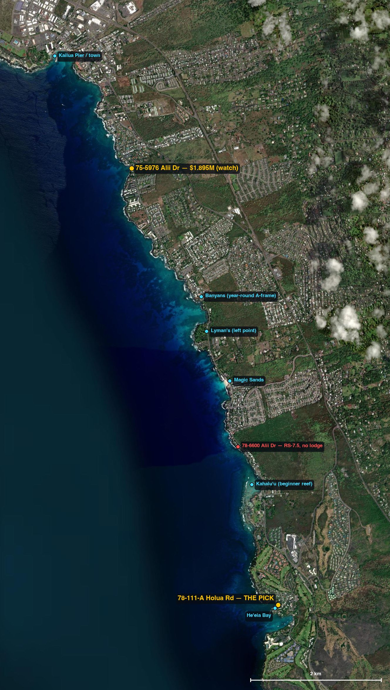
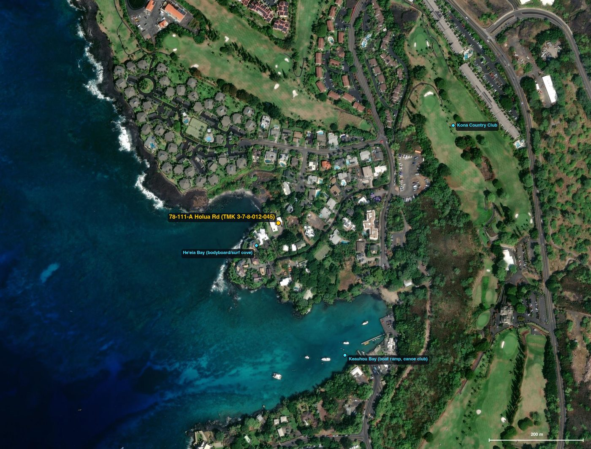
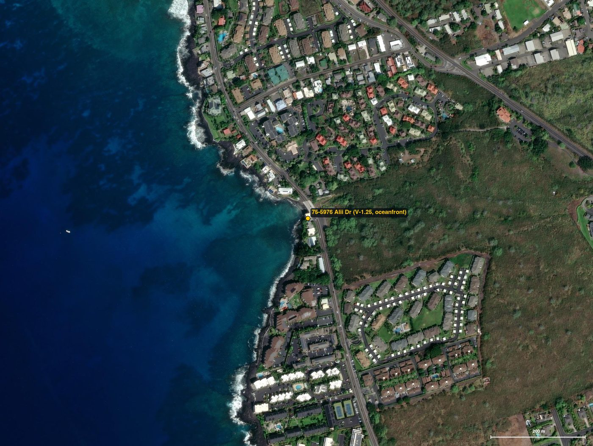
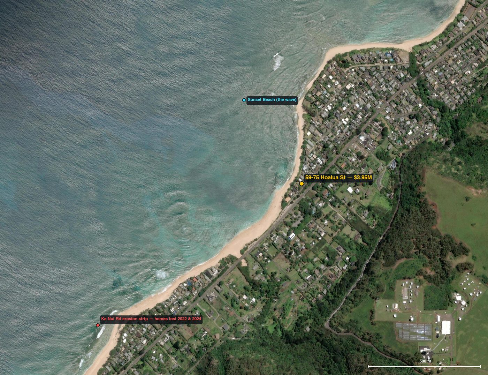
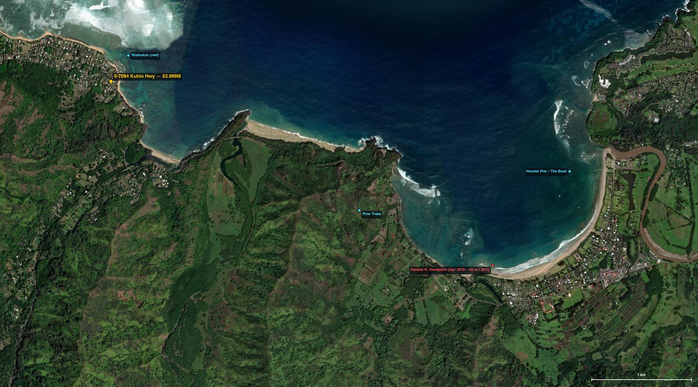

The verdict, up front
Buy 78-111-A Holua Road, Keauhou, Kailua-Kona — a fee-simple, five-bedroom-plus-guest-studio compound that sleeps 14, with a pool, on 0.6 acres, a two-minute walk above the surf cove of Heʻeia Bay, holding the one asset money can no longer buy in Hawaii: a registered short-term-rental use that survives the sale. Ask is $4.45M after two cuts from $4.995M; roughly a year of cumulative market time says the seller meets a disciplined buyer. Offer $3.9M, walk at $4.2M. Full case below.
Backup: take a backup-offer position on 75-5976 Aliʻi Dr — oceanfront, resort-zoned V-1.25 by right, asking $1.895M and under contract today. If it falls out of escrow you get a legal oceanfront lodge seed at half budget. Details.
01 · The market nobody pricesLegality is the scarce asset
Every buyer scouting "surf lodge" inventory looks at waves, then at houses. Hawaii has spent the last four years making both irrelevant. Since 2022, three of the four counties have outlawed or are actively phasing out short-stay lodging outside a handful of resort-zoned pockets — and in 2024 the state legislature (Act 17) explicitly blessed counties phasing out even grandfathered rentals. A lodge is a nightly-stay business. Where nightly stays are banned, you don't own a lodge; you own a liability with a sea view.
| County | The rule | What it means for a new lodge |
|---|---|---|
| Oʻahu | Ord. 22-7 (2022): short-term rentals only in resort zones + a few mapped apartment pockets; unpermitted B&Bs can't rent under 90 days; fines to $10,000/day. New nonconforming certificates: none since 1989. | Dead outside Waikīkī/Ko Olina/Turtle Bay. The North Shore is residential. |
| Kauaʻi | County code 8-17: vacation rentals prohibited outside Visitor Destination Areas; the nonconforming list closed March 30, 2009; outside the VDA even a room can't rent under 180 days. | Dead in Hanalei/Haena (banned there since 2008). Princeville condos only. |
| Maui | Ord. 5909 ("Bill 9", signed 12/15/2025): ~6,200 grandfathered "Minatoya" units lose rental rights — West Maui 1/1/2029, everywhere else 1/1/2031. Litigation pending; no injunction. | An island actively un-zoning the business. Skip entirely. |
| Hawaiʻi (Big Island) | Ord. 25-50 (2025): registration regime (deadline July 1, 2026), fees $250–500 — but no zoning rollback. Rentals remain legal by right in resort/hotel (V) zones, and registered nonconforming uses continue — including through a sale, if the buyer re-registers within 90 days. | The last county where a $4M buyer can still legally open a lodge. |
So the search isn't "Hawaii." The search is: parcels where nightly lodging is legal, within walking or trivial driving distance of a real wave, under $4M, for sale right now. That filter eliminates almost everything — and what survives is concentrated on one road: Aliʻi Drive, Kailua-Kona, on the Big Island, where the county's V-1.25 resort-hotel zoning runs in pockets along eight kilometers of lava-rock coastline with five named surf breaks on it.
02 · Ground truth from aboveThe Aliʻi Drive corridor
Below is the whole thesis in one satellite frame: town and pier at the north, a string of breaks down the coast, and the two legal plays marked in amber. Red marks the cautionary tale — an oceanfront $4.2M listing two parcels outside the legal zone.
candidate (legal lodging) surf break / landmark hazard or rejected

Why this coast beats the postcard coasts for a lodge (not a surf trip):
- Year-round waves. Kona faces south-west: it takes summer S–SW swells head-on and catches winter WNW energy that wraps below the other islands' shadow. Surfline's spot guide calls Banyans "a multi-personality A-frame that breaks year-round," often rideable when Oʻahu's North Shore is maxed out and unsurfable (source). A lodge sells 52 weeks, not a winter season.
- Morning glass, daily. The leeward Kona side runs a diurnal wind cycle — calm/offshore mornings, afternoon sea breeze. Guests surf clean conditions before breakfast nearly every day of the year.
- A skills ladder within 5 km. Kahaluʻu's gentle reef (lessons revenue), Magic Sands bodysurfing, Lyman's left point, Banyans' A-frame for the rippers, Heʻeia Bay bodyboarding at the doorstep. One van, five products.
- Rock, not sand. This shoreline is lava bench, not a retreating dune system. Kona has tsunami and lava context (addressed in the risk register) but no Sunset-Beach-style chronic-erosion crisis eating houses.
- Logistics. Kona International is ~35 minutes; the Ironman course runs literally down this road; Kailua town and its restaurants are 15 minutes, Kona Community Hospital ~20.
03 · The verdict78-111-A Holua Rd — "Kinohi at Heʻeia"

Why this is the one
It is the only property I found in the state that is simultaneously: (a) actively for sale, (b) already configured as a lodge (six rentable keys across two structures, 14 guests, pool, half-acre of grounds — not a beach shack you'd spend two years permitting), (c) legally rentable nightly from day one, and (d) within walking distance of surfable water, in this case the bodyboard/surf cove at Heʻeia Bay (~150 m on foot) with Kahaluʻu's beginner reef 1.9 km and Banyans/Lyman's a few minutes' drive up Aliʻi Drive. Keauhou is the quiet, green end of the corridor — country-club calm instead of condo-wall Kona — which is exactly the register a "small, beautiful" lodge brand wants.
On price: you are buying $2.5M of assessed real estate plus the license and the configuration. The seller has already conceded 11% and carried the property for a year. In a Kona market with inventory growing and regulation tightening everywhere else, the pool of buyers who can fully exploit this specific asset (nightly rental at scale) is thin — but for that pool, of which you are one, it is nearly irreplaceable. That spread is your negotiation. Open at $3.9M with proof of funds and a short close; be prepared to win at $4.0–4.1M; walk above $4.2M and fall back to the backup below.
The catch we found (and why it's also the moat)
The brokerage marketing says "resort zone." The county's own GIS says the parcel is zoned RS-10 — residential. The rental right is real but it doesn't come from zoning: it's a registered nonconforming STVR use under Ordinance 2018-114 (Bill 108), which required proof the rental operated before April 1, 2019. Under the current rules (Planning Dept. Rule 23 and Ord. 25-50), that registration expires 90 days after a change of ownership unless the new owner re-registers.
So: make the purchase contract contingent on (1) the county confirming the registration is current and in good standing, and (2) acceptance of your re-registration filing — your attorney will draft this in a day. Do not waive it; without the registration this is a $4M residential house. The flip side: no new certificates have been issued since 2019. Every year that passes, the supply of legally rentable compounds like this shrinks toward the resort zones. You are buying a license that regulation keeps making scarcer — the same dynamic that has an Oʻahu NUC home with $500K/yr gross asking $5.995M (comp).
What the money does (scout's sketch — verify with an operator)
Run as a six-key surf lodge (5 suites + studio) at a blended $300–375/night and 60–70% occupancy — conservative against Keauhou's resort-corridor comparables and the property's own "proven multi-year track record" (listing's words) — gross lands in the $400–550K/yr range before management; whole-compound buyouts (sleeps 14) for surf camps, retreats and Ironman week price $1,200–1,800/night. On a $4.0M basis that is a plausible 6–9% gross yield with the real upside being the brand: the only walkable-to-water legal lodge product in Keauhou. Demand a trailing-12 P&L in diligence; the listing advertises one.
04 · The backup75-5976 Aliʻi Dr — oceanfront, legal by right, half the budget

$1,895,000 · 4 bd / 4 ba · 2,518 sq ft · oceanfront · MLS 726123 (Hawaii Life). This one is zoned V-1.25 resort-hotel — I verified the zoning polygon at the parcel in the county GIS, and cross-checked the parcel ID the old-fashioned way: TMK 3-7-5-019-016's assessed value ($2,007,500) times the county's 11.11/$1,000 rate equals $22,303 — the listing discloses $22,302 in taxes. Same parcel. Here the rental right comes from zoning itself: no nonconforming-certificate fragility at all. It runs today as a successful vacation rental.
It is Active Under Contract as of June 10, 2026 — someone else read this market the same way. Hawaii deals fall out of escrow constantly. Have your broker lodge a backup offer at list this week. If it comes back: you acquire a legal, oceanfront, income-producing seed asset at $1.9M and hold ~$2M of the budget for a second V-zoned building or a to-the-studs conversion — a two-building lodge instead of one. Eyes open: it's a 1976 build on 0.07 acres with one parking stall, FEMA Zone AE, inside the tsunami evacuation zone, and salt-air maintenance is forever. It's the opportunistic play, not the safe one — which is why it's the backup.
05 · Eyes openThe beautiful traps I'm telling you not to buy
59-75 Hoalua St, Sunset Beach, Oʻahu — $3,950,000

Sand-in-front-of-the-lanai oceanfront on the most famous wave on earth, at $3.95M (MLS 202605480, listed April 13, 2026). This is the listing your friends will forward you. Three reasons I won't let you wire on it:
- The lodge is illegal. County GIS: zoned R-5 residential. Under Ord. 22-7 you cannot rent it for under 30 days (under 90 as an unpermitted B&B), at fines up to $10,000/day. Your "lodge" would be a private house with a mortgage.
- The coast is in managed retreat. Within 1.5 km of this lot, houses collapsed into the ocean in 2022 (Rocky Point) and September 2024 (Kammies) — see DLNR's hazard notice and Civil Beat's 2025 report. The state counts roughly a third of North Shore residential parcels as imminently threatened; seawalls are prohibited; the official toolbox is dune restoration and retreat. FEMA zone here: VE (wave-action). The asset's land is the thing the ocean is taking.
- Even as a trophy it's mispriced for you. $3.95M buys 1,612 sq ft and four bedrooms you can't legally fill with guests. The same money in Kona buys six legal keys and a pool.
5-7094 Kuhio Hwy, Hanalei, Kauaʻi — $3,999,000

Beachfront with a pool near Waikoko, walking distance to a real reef wave (MLS 724741). And: zoned R-4 (county GIS), outside the Visitor Destination Area, where vacation rentals have been prohibited since 2008 and the grandfather list closed in 2009. Kauaʻi is the county that banned rentals in this exact neighborhood by name. Then geography: one two-lane road and a string of one-lane bridges connect it to the rest of the island; in April 2018 this coast took ~50 inches of rain in 24 hours (a U.S. record, measured at Waipā, 4 km away), severed the road for months, and the parcel itself screens FEMA VE + tsunami evacuation zone. Paradise, structurally incompatible with hospitality revenue.
78-6600 Aliʻi Dr, Kailua-Kona — $4,200,000 (the near-miss that proves the method)
Gated oceanfront main-plus-guest-house compound at Kahaluʻu (MLS 721460, 336 days on market) — 350 m from the beginner reef, looks perfect. County GIS: RS-7.5 residential, no STVR certificate advertised, FEMA VE at the shoreline, $42,770/yr in taxes. On this corridor the legal boundary moves parcel by parcel: this one is a few hundred meters — and one zoning polygon — away from being investable. That's the entire discipline of this hunt in one listing: the map decides, not the photos.
Maui — skipped on principle
Active inventory in budget exists (Haiku estates, ocean-view acreage). But the county just enacted the largest short-term-rental rollback in U.S. history (Ord. 5909), the permit pathway for new single-family rentals is effectively frozen, and the litigation outcome is unknowable. You don't build a hospitality brand on land whose right to host is an open court case.
06 · The surf story, with receiptsWill guests actually score?
A lodge's surf claim has to survive a guest with a Surfline account. Here is the honest version for the Keauhou–Kona corridor:
- Consistency over size. Banyans is the anchor: an A-frame reef that Surfline's spot guide rates as breaking year-round — direct S–SW windows in summer, and in winter the WNW swells (below ~300°) that sneak under the island chain's shadow, "performing with much more manageable yet still solid surf" on the days Oʻahu is washed out. Lyman's adds a long left point; Kahaluʻu is one of the best learner reefs in the state; Magic Sands and Honl's fill the small days. Heʻeia Bay gives the pick a literal home break for bodyboards and logs.
- Wind is the cheat code. Leeward-side diurnal winds mean glassy dawn sessions most days of the year — the single biggest determinant of guest satisfaction at a surf lodge, and something the windward "postcard" coasts cannot promise.
- Verification infrastructure exists. Real-time swell ground truth comes from the PacIOOS/CDIP buoy network (live map): Hilo (NDBC 51206) reads incoming N–NE energy, Waimea (51201) the winter NW train, and the Lānaʻi Southwest buoy (51203) is the upstream reference for the S–SW swells that light up Kona in summer. One honesty note from this scout: the offshore NOAA buoy 51003 ("Western Hawaii") went adrift in Feb 2025 and reports no data — anyone citing it to you is selling vibes.
- What Kona is not. It is not Pipeline, and your brand shouldn't pretend otherwise. It is the coast where an intermediate guest improves every single morning and an advanced guest gets shoulder-high-to-overhead reef surf in trunks, year-round, 8 minutes from breakfast. That is the product a 6-key lodge actually sells.
07 · Risk registerWhat could kill this deal — said plainly
| Risk | Reality | Mitigation |
|---|---|---|
| STVR registration lapse | Registration expires 90 days post-closing if not re-registered; without it the lodge is illegal. | Escrow contingency on county confirmation + accepted re-registration (Ord. 25-50 / Rule 23). Non-negotiable. |
| Bill 147 (pending) | County is drafting operational standards/enforcement for rentals; deferred by the Windward Planning Commission June 5, 2026 — still moving. | It adds standards (parking, quiet hours, fines), not zoning rollback; a registered, well-run lodge is the constituency it protects. Track it; budget for compliance. |
| Tsunami | The parcel is inside the mapped evacuation zone (as is essentially all of coastal Kona). It is not in the extreme-event-only zone, and FEMA flood is Zone X. | Evacuation plan is already a county requirement for rentals; insure accordingly; guest-safety signage. The compound sits back on a rise rather than on the bay frontage that took the brunt of past events (1960, 2011) — but it is in the zone, and the brief says so. |
| Lava / vog | Lava Zone 4 (Hualālai flank — last erupted 1801). Moderate; insurable through standard carriers, unlike Zones 1–2 in Puna. Vog drifts in on light-wind days. | Priced into all Kona real estate; disclose in brand honestly ("volcano coast"). |
| Single-asset operations | Six keys, one site: occupancy risk is concentrated, and resort-corridor competition (Outrigger Kona, condo rentals) is real. | The defensible niche is the surf-lodge program (guides, coaching, boards, dawn-patrol culture) — not generic rooms. Hire the GM before closing. |
| The ask is over budget | $4.45M list vs $4M budget. | The price path ($4.995M → $4.45M, ~1 yr exposure, $2.54M assessed) is a seller in motion. If they hold above $4.2M: walk, take the 75-5976 backup, and re-engage in 60 days. Discipline is leverage. |
08 · The askWhat I need from you this week
- Authorize the offer: $3.9M on 78-111-A Holua Rd, proof of funds, 45-day close, contingencies: STVR registration confirmation + re-registration, trailing-24-month P&L, inspection, title (confirm the CPR unit boundaries — it's the "A" unit of TMK 3-7-8-012-045).
- Authorize the backup offer at list on 75-5976 Aliʻi Dr (MLS 726123) so we're first in line if escrow breaks.
- Engage: a Kona land-use attorney (one day of work on the contingency language) and a hospitality manager for the P&L review.
Every fact above is checkable from your desk in minutes — the links are live and the coordinates are real. When something I've written doesn't survive your checking, call me. That's what a scout is for.
— Your site scout · Kailua-Kona corridor survey completed June 10, 2026
AppendixVerify me: coordinates & sources
Paste any coordinate into Google Maps (satellite layer). Listing prices/statuses are as scouted on June 10, 2026 — judge against that date; Hawaii inventory moves.
| What | Coordinates | Claim to check |
|---|---|---|
| 78-111-A Holua Rd (THE PICK) | 19.56373, -155.96435 | Compound w/ pool on green rise, one block from a small cove (Heʻeia Bay), golf course mauka |
| Heʻeia Bay | 19.56330, -155.96480 | Rocky surf cove SW of the pick |
| Keauhou Bay | 19.56120, -155.96300 | Boat ramp & canoe hale, 5-min walk south |
| 75-5976 Aliʻi Dr (BACKUP) | 19.62384, -155.98577 | House on the makai (ocean) side where road meets the lava bench |
| Banyans | 19.60620, -155.97560 | Reef A-frame off the small bay at Kona Bali Kai |
| Lyman's | 19.60140, -155.97480 | Left point at Kahului Bay's south corner |
| Kahaluʻu Beach Park | 19.58030, -155.96820 | Beginner reef & snorkel bay |
| 78-6600 Aliʻi Dr (REJECTED) | 19.58553, -155.97023 | Oceanfront compound, residential zone |
| 59-75 Hoalua St (REJECTED) | 21.67566, -158.03902 | Beachfront house row at Sunset Beach |
| Ke Nui Rd erosion strip | 21.67000, -158.04780 | Narrow dune strip; 2022/2024 collapse area |
| 5-7094 Kuhio Hwy (REJECTED) | 22.22065, -159.54520 | Waikoko beachfront, west arm of Hanalei Bay |
Primary sources
- Listings: 78-111-A Holua Rd (MLS 729517) · 75-5976 Aliʻi Dr (MLS 726123) · 59-75 Hoalua St (MLS 202605480) · 5-7094 Kuhio Hwy (MLS 724741) · 78-6600 Aliʻi Dr (MLS 721460)
- Parcels / zoning / SMA / lava / tsunami / FEMA layers: State of Hawaii Statewide GIS
(queries scripted in
scout/groundtruth.py; raw responses committed inscout/groundtruth.json) - Regulation: Honolulu DPP STR program · Kauaʻi Planning TVR · Maui Ord. 5909 analysis · Hawaiʻi County Ord. 25-50 (HPR) · Hawaiʻi County Planning Rule 23 (STVR/NUC)
- Surf: Surfline Banyans spot guide · PacIOOS wave buoys · NDBC 51003 status
- Hazard & erosion record: DLNR North Shore erosion notice (2024) · Civil Beat (2025) · Star-Advertiser (2025)